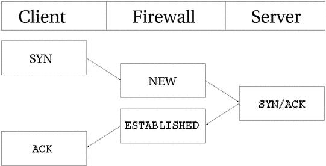
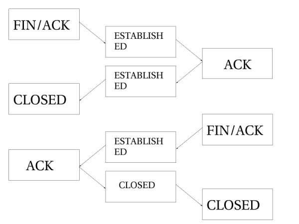
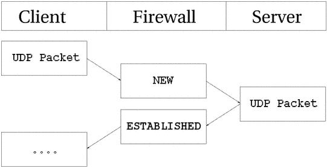
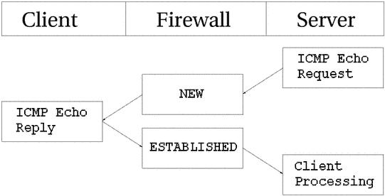
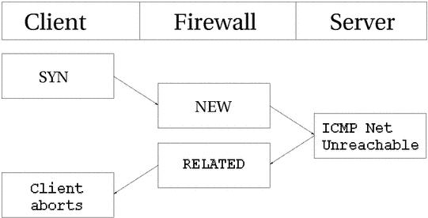
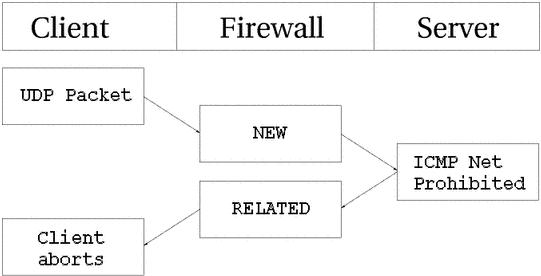
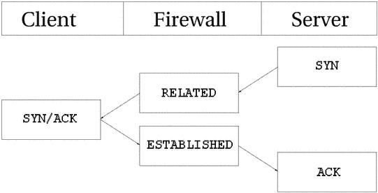
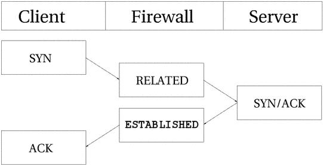

状态机制
Table of Contents
本章将详细介绍状态机制
概述
状态机制是 iptables 中特殊的一部分，其实它不应该叫状态机制，因为它只是一种 连接跟踪 机制。但 是，很多人都认可状态机制这个名字。也或多或或少地用这个名字来表示和连接跟踪相同的意思。这 不应该引起什么混乱的。连接跟踪可以让 Netfilter 知道某个特定连接的状态。运行连接跟踪的防火墙称作 带有状态机制 的防火墙，以下简称为 状态防火墙 。状态防火墙比非状态防火墙要安全，因为它允许编写更严密的规则。
在iptables里，包是和被跟踪连接的四种不同状态有关的。它们是 NEW ， ESTABLISHED ， RELATED 和 INVALID 。 后面会深入地讨论每一个状态。使用 –state 匹配操作，能很容易地控制 谁或什么能发起新的会话
所有在内核中由 Netfilter 的特定框架做的连接跟踪称作 conntrack 。conntrack可以作为模块安装，也可以作为内核的一部分。大部分情况下，需要更详细的连接跟踪，这是相比于缺省的conntrack而言。也因为此，conntrack中有许多用来处理 TCP ， UDP 或 ICMP 协议的部件。这些模块从数据包中提取详细的、唯一的信息，因此能保持对每一个数据流的跟踪。这些信息也告知conntrack流当前的状态。例如，UDP流一般由他们的 目的地址 、 源地址 、 目的端口 和 源端口 唯一确定
在以前的内核里，可以打开或关闭重组功能。然而，自从iptables和Netfilter，尤其是连接跟踪被引入内核，这个选项就被取消了 因为没有包的重组，连接跟踪就不能正常工作。现在重组已经整合入 conntrack，并且在conntrack启动时自动启动 不要关闭重组功能，除非你要关闭连接跟踪
除了本地产生的包由 OUTPUT 链处理外，所有连接跟踪都是在 PREROUTING 链里进行处理的。iptables会在PREROUTING链里从新计算所有的状态：
- 如果发送一个流的初始化包，状态就会在OUTPUT链里被设置为 NEW
- 当收到回应的包时，状态就会在PREROUTING链里被设置为 ESTABLISHED
- 如果第一个包不是本地产生的，那就会在PREROUTING链里被设置为 RELATED 状 态
综上，所有状态的改变和计算都是在 nat 表中的 PREROUTING 链和 OUTPUT 链里完成的
conntrack记录
先来看看怎样阅读 /proc/net/ipconntrack 里的conntrack记录。这些记 录表示的是当前被跟踪的连接。如果安装了 ipconntrack 模块：
$ cat /proc/net/ip_conntrack tcp 6 117 SYN_SENT src=192.168.1.6 dst=192.168.1.9 sport=32775 \ dport=22 [UNREPLIED] src=192.168.1.9 dst=192.168.1.6 sport=22 \ dport=32775 use=2
首先显示的是协议，这里是 tcp ，接着是十进制的6（ tcp的协议类型代码是6 ）。之后的117是 这条conntrack记录的生存时间 ，它会有规律地被消耗，直到收到这个连接的更多的包。那时，这个值就会被设为当时那个状态的缺省值。接下来的是这个连接在当前时间点的状态。上面的例子说明这个包处在状态 SYNSENT ，这个值是iptables显示的，以便好理解，而内部用的值稍有不同。SYNSENT说明 正在观 察的这个连接只在一个方向发送了一TCP SYN包 。再下面是 源地址 、 目的地址 、 源端口 和 目的端口 。其 中有个特殊的词 UNREPLIED ，说明 这个连接还没有收到任何回应 。最后，是希望接收的应答包的信息，他们的地址和端口和前面是相反的
连接跟踪记录的信息依据IP所包含的协议不同而不同，所有相应的值都是在头文件linux/include/netfilter-ipv4/ip _ conntrack*.h中定义的。IP、TCP、UDP、ICMP协 议的缺省值是在linux/include/netfilter-ipv4/ip _ conntrack.h里定义的。具 体的值可以查看相应的协议，但这里用不到它们，因为它们大都只在conntrack内部使用。随着状态的改变，生存时间也会改变
数据包在用户空间的状态
包的状态依据IP所包含的协议不同而不同，但在内核外部，也就是用户空间里，只有4种 状态： NEW ， ESTABLISHED ， RELATED 和 INVALID 。它们主要是和状态匹配一起使用。下面就简要地介绍以下这几种状态：
| State | Comment |
| NEW | NEW说明这个包是我们看到的第一个包。意思就是，这是 conntrack模块看到的某个连接第一个包 ，它即将被匹配了。比如，我们看到一个SYN 包，是我们所留意的连接的第一个包，就要匹配它。第一个包也可能不是SYN包，但它仍会被认为是NEW状态。这样做有时会导致一些问题，但对某些情况是有非常大的帮助的。例如，在 我们想恢复某条从其他的防火墙丢失的连接时，或者某个连接已经超时，但实际上并未关闭时 |
| ESTABLISHED | ESTABLISHED已经注意到两个方向上的数据传输，而且会继续匹配这个连接的包。处于ESTABLISHED状态的连接是非常容易理解的。只要发送并接到应答，连接就是ESTABLISHED的了。一个连接要从NEW变为ESTABLISHED， 只需要接到应答包即可，不管这个包是发往防火墙的，还是要由防火墙转发的 。ICMP的错误和重定向等信息包也被看作是ESTABLISHED，只要它们是我 们所发出的信息的应答 |
| RELATED | RELATED是个比较麻烦的状态。当一 个连接和某个已处于ESTABLISHED状态的连接有关系时，就被认为是RELATED的了。换句话说，一个连接要想是RELATED的， 首先要有一个ESTABLISHED的连接。这个ESTABLISHED连接再产生一个主连接之外的连接 ，这个新的连接就是RELATED的了，当然前提是conntrack模块要能理解RELATED。ftp是个很好的例子，FTP-data 连接就是和FTP-control有RELATED的。还有其他的例子，比如，通过IRC的DCC连接。有了这个状态，ICMP应答、FTP传输、DCC等才能穿过防火墙正常工作。注意，大部分还有一些UDP协议都依赖这个机制。这些协议是很复杂的，它们把连接信息放在数据包里，并且要求这些信息能被正确理解 |
| INVALID | INVALID说明 数据包不能被识别属于哪个连接或没有任何状态 。有几个原因可以产生这种情况，比如， 内存溢出 ， 收到不知属于哪个连接的ICMP错误信息 。一般地，我们DROP这个状态的任何东西 |
这些状态可以一起使用，以便匹配数据包。这可以使防火墙非常强壮和有效。以前，我们经常打 开1024以上的所有端口来放行应答的数据。现在，有了状态机制，就不需再这样了。可以只开放那些有应答数据的端口，其他的都可以关闭。这样就安全多了
TCP 连接
一个TCP连接是经过三次握手协商连接信息才建立起来的。整个会话由一个 SYN 包开始，然后是一个 SYN/ACK 包，最后是一个 ACK 包，此时，会话才建立成功，能够发送数据。最大的问题在于 连接跟踪怎样控制这个过程
默认情况下，连接跟踪基本上对所有的连接类型做同样的操作。看看下面的图片，就能明白在连接的不同阶段，流是处于什么状态的。就如你看到的，连接跟踪的代码不是从用户的观点来看待TCP连接建立 的流程的。连接跟踪一看到 SYN 包，就认为这个连接是 NEW 状态，一看到返回的 SYN/ACK 包，就认为连接是 ESTABLISHED 状态

如果仔细想想第二步，应该能理解为什么。有了这个特殊处理:
- NEW 和 ESTABLISHED 包 就可以发送出本地网络
- 只有 ESTABLISHED 的连接才能有回应信息
如果把整个建立连接的过程中传输的数据包都看作NEW，那么三次握手所用的包都是NEW状态的，这样我们就不能阻塞从外部到本地网络的连接了 因为即使连接是从外向内的，但它使用的包也是NEW状态的，而且为了其他连接能正常传输，不得不允许NEW状态的包返回并进入防火墙 更复杂的是，针对TCP连接内核使用了很多内部状态，它们的定义在 RFC 793 - Transmission Control Protocol的21-23页
以用户的观点来看，这是很简单的。但是，从内核的角度看这一块还有点困难的。来看一个例子。认真考虑一下在 /proc/net/ip _ conntrack 里，连接的状态是如何改变的：
tcp 6 117 SYN_SENT src=192.168.1.5 dst=192.168.1.35 sport=1031 \ dport=23 [UNREPLIED] src=192.168.1.35 dst=192.168.1.5 sport=23 \ dport=1031 use=1
从上面的记录可以看出， SYN _ SENT 状态被设置了，这说明连接已经发出一个 SYN 包，但应答还没发送过 来，这可从 [UNREPLIED] 标志看出
tcp 6 57 SYN_RECV src=192.168.1.5 dst=192.168.1.35 sport=1031 \ dport=23 src=192.168.1.35 dst=192.168.1.5 sport=23 dport=1031 \ use=1
现在已经收到了相应的 SYN/ACK 包，状态也变为 SYN _ RECV ，这说明最初发出的 SYN 包已正确传输，并 且 SYN/ACK 包也到达了防火墙。 这就意味着在连接的两方都有数据传输，因此可以认为两个方向都有相应的回应。当然这是假设的
tcp 6 431999 ESTABLISHED src=192.168.1.5 dst=192.168.1.35 \ sport=1031 dport=23 src=192.168.1.35 dst=192.168.1.5 \ sport=23 dport=1031 use=1
现在发出了三步握手的最后一个包，即 ACK 包，连接也就进入 ESTABLISHED 状态了。再传输几个数据包，连接就是 [ASSURED] 的了
下面介绍TCP连接在关闭过程中的状态：

如上图，在发出最后一个 ACK 包之前，连接（指两个方向）是不会关闭的。注意，这只是针对一般的情 况。连接也可以通过发送关闭，这用在拒绝一个连接的时候。在 RST 包发送之后，要经过预先设定的一段时间，连接才能断掉
连接关闭后，进入 TIME _ WAIT 状态，缺省时间是2分钟。之所以留这个时间，是为了让数据包能完全通过各种规则的检查，也是为了数据包能通过拥挤的路由器，从而到达目的地
如果连接是被 RST 包重置的，就直接变为 CLOSE 了。这意味着在关闭之前只有10秒的默认时间。 RST 包是不需要确认的，它会直接关闭连接。针对TCP连接，还有其他一些状态没有谈到。下面给出一个完整的状态列表和超时值：
| State | Timeout value |
| NONE | 30 minutes |
| ESTABLISHED | 5 days |
| SYNSENT | 2 minutes |
| SYNRECV | 60 seconds |
| FINWAIT | 2 minutes |
| TIMEWAIT | 2 minutes |
| CLOSE | 10 seconds |
| CLOSEWAIT | 12 hours |
| LASTACK | 30 seconds |
| LISTEN | 2 minutes |
这些值不是绝对的，可以随着内核的修订而变化，也可以手动配置
注意：状态机制在用户空间里的部分不会查看TCP包的标志位（也就是说TCP标志对它而言是透明 的）。如果想让NEW状态的包通过防火墙，就要指定NEW状态，理解的NEW状态的意思就是指SYN包， 可是iptables又不查看这些标志位。这就是问题所在。有些没有设置SYN或ACK的包，也会被看作NEW状态的。这样的包可能会被冗余防火墙用到，但对只有一个防火墙的网络是很不利的（可能会被攻击）。那怎样才能不受这样的包的影响呢？可以使用未设置SYN的NEW状态包里的命令。还有一个办法，就是安装patch-o-matic里的tcp-window-tracking扩展功能，它可以使防火墙能根据TCP的一些标志位来进行状态跟踪
UDP连接
UDP 连接是无状态的，因为它没有任何的连接建立和关闭过程，而且大部分是无序列号的。以某个顺序收到的两个数据包是无法确定它们的发出顺序的。但内核仍然可以对UDP连接设置状态。来看看是如何跟踪UDP连接的，以及conntrack的相关记录

先来看看第一个UDP包发出后的conntrack记录：
udp 17 20 src=192.168.1.2 dst=192.168.1.5 sport=137 dport=1025 \ [UNREPLIED] src=192.168.1.5 dst=192.168.1.2 sport=1025 \ dport=137 use=1
这是一个UDP包。第一个是协议名称，第二个是协议号，第三个是此状态的生存时间， 默认是30秒。接下来是包的源、目地址和端口，还有期待之中回应包的源、目地址和端口。 [UNREPLIED] 标记说明还未收到回应
udp 17 170 src=192.168.1.2 dst=192.168.1.5 sport=137 \ dport=1025 src=192.168.1.5 dst=192.168.1.2 sport=1025 \ dport=137 use=1
一旦收到第一个包的回应， [UNREPLIED] 标记就会被删除，连接就被认为是 ESTABLISHED 的，但在记录里并不显示ESTABLISHED标记。相应地，状态的超时时间也变为180秒了。在本例中，只剩170秒了，10秒后， 就会减少为160秒。有个东西是不可少的，虽然它可能会有些变化，就是前面提过的 [ASSURED] 。要想变为 [ASSURED]状态，连接上必须要再有些流量
udp 17 175 src=192.168.1.5 dst=195.22.79.2 sport=1025 \ dport=53 src=195.22.79.2 dst=192.168.1.5 sport=53 \ dport=1025 [ASSURED] use=1
可以看出来， [ASSURED] 状态的记录和前面的没有多大差别，除了标记由[UNREPLIED]变成[ASSURED]。如 果这个连接持续不了180秒，那就要被中断。180秒是短了点儿，但对大部分应用足够了。只要遇到这个连接的包穿过防火墙，超时值就会被重置为默认值，所有的状态都是这样的
ICMP 连接
ICMP 也是一种无状态协议，它只是用来控制而不是建立连接。ICMP包有很多类型，但只有四种类型有应答包，它们是回显请求和应答（ Echo request and reply ），时间戳请求和应答（ Timestamp request and reply ），信息请求和应答（ Information request and reply ），还有地址掩码请求和应答（ Address mask request and reply ），这些包有两种状态， NEW 和 ESTABLISHED 。时间戳请求和信息请求已经废除不用了，回显请求还是常用的，比如ping命令就用的到，地址掩码请求不太常用，但是可能有时很有用并且值得使用。看看下面的图，就可以大致了解ICMP连接的NEW和ESTABLISHED状态了

主机向目标发送一个回显请求，防火墙就认为这个包处于 NEW 状态。 目标回应一个回显应答，防火墙就认为包处于 ESTABLISHED 了。当回显请求被发送时，conntrack里就有这样的记录了：
icmp 1 25 src=192.168.1.6 dst=192.168.1.10 type=8 code=0 \ id=33029 [UNREPLIED] src=192.168.1.10 dst=192.168.1.6 \ type=0 code=0 id=33029 use=1
可以看到，ICMP的记录和TCP、UDP的有点区别，协议名称、超时时间和源、目地址都一样，不同之处在于 没有了端口 ，而新增了三个新的字段： type ， code 和 id 。字段type说明 ICMP的类型 。code说明 ICMP的代码 ，这些代码在附录ICMP类型里有说明。id是 ICMP包的ID 。每个ICMP包被发送时都被分配一个ID，接受方把同样的ID分配给应答包，这样发送方能认出是哪个请求的应答
[UNREPLIED] 的含义和前面一样，说明数的传输只发生在一个方向上，也就是说未收到应答。再往后，是应答包的源、目地址，还有相应的三个新字段，要注意的是type和code是随着应答包的不同而变化的，id和请求包的一样
和前面一样，应答包被认为是 ESTABLISHED 的。然而，在应答包之后，这个ICMP连接就不再有数据传输了。所以，一旦应答包穿过防火墙，ICMP的连接跟踪记录就被销毁了
以上各种情况，请求被认为 NEW ，应答是 ESTABLISHED 。 换句话说，就是当防火墙看到一个请求包时，就认为连接处于 NEW 状态，当有应答时，就是 ESTABLISHED 状态
ICMP的缺省超时是30秒，可以在手动修改
ICMP的另一个非常重要的作用是，告诉UDP、TCP连接或正在努力建立的连接发生了什么，这时ICMP应答被认为是 RELATED 的。主机不可达和网络不可达就是这样的例子。当试图连接某台机子不成功时（可能那台机子被关上了），数据包所到达的最后一台路由器就会返回以上的ICMP信息，它们就 是RELATED的，如下图：

我们发送了一个SYN包到某一地址，防火墙认为它的状态是 NEW 。但是，目标网络有问题不可达，路由器就会返回网络不可达的信息，这是 RELATED 的。连接跟踪会认出这个错误信息是哪个连接的，连接会中断，同时相应的记录删除会被删除
当UDP连接遇到问题时，同样会有相应的ICMP信息返回，当然它们的状态也是 RELATED ，如下图：

发送一个UDP包，当然它是 NEW 的。但是，目标网络被一些防火墙或路由器所禁止。防火墙就会收到网络被禁止的信息。防火墙知道它是和哪个已打开的UDP连接相关的，并且把这个信息（状态是 RELATED ）发给它，同时，把相应的记录删除。客户机收到网络被禁止的信息，连接将被中断
缺省的连接操作
conntrack机制并不知道如何处理某个特殊的协议，尤其是在它不了解这个协议或不知道协议如何工作时，比如，NETBLT，MUX还有EGP。这种情况下，conntrack使用缺省的操作。这种操作很象对UDP连接的 操作，就是 第一个包被认作 NEW ，其后的应答包等等数据都是 ESTABLISHED
使用缺省操作的包的超时值都是一样的，600秒，也就是10分钟。当然，这个值可以手动修改
复杂协议和连接跟踪
有些协议比其他协议更复杂，这里复杂的意思是指连接跟踪机制很难正确地跟踪它们，比如， ICQ 、 IRC 和 FTP ，它们都在数据包的数据域里携带某些信息，这些信息用于建立其他的连接。因此，需要一些特殊的 helper来完成工作
下面以FTP作为例子。FTP协议先建立一个单独的连接 FTP控制会话 。通过这个连接发布命令，其他的端口就会打开以便传输和这个命令相关的数据。这些连接的建立方法有两种：
- 主动模式：FTP客户端发送端口和IP地址信息给服务器端，然后，客户端打开这个端口，服务器端从它自己的20端口（FTP-Data端口号）建立与这个端 口的连接，接着就可以使用这个连接发送数据了
问题在于防火墙不知道这些额外的连接（相对于控制会话而言），因为这些连接在建立时的磋商信息都在协议数据包的数据域内，而不是在可分析的协议头里。因此，防火墙就不知道是不是该放这些从服务器到 客户机的连接过关。
解决的办法是为连接跟踪模块 增加一个特殊的helper ，以便能检测到那些信息。这样，那些从FTP服务器 到客户机的连接就可以被跟踪了，状态是 RELATED ，过程如下图所示：

- 被动模式：data连接的建立过程和主动FTP的相反。客户机告诉服务器需要某些数据，服务器就把地址和端口发回给客户机，客户机据此建立连接接受数据
如果FTP服务器在防火墙后面，或你对用户限制的比较严格，只允许他们访问HTTP和FTP，而封闭了其他所有端口，为了让在Internet是的客户机能访问到FTP，也需要增加上面提到的helper。下面是被动模式下data连接的建立过程：

有些conntrack helper已经包含在内核中，如果在内核里没有你想要的helper，可以到iptables用户空间的patch-o-matic目录中看看，那里有很多的helper，比如针对ntalk或H.323协议的等等。如果没找到，还有几个选择：可以查查iptables的 CVS，或者联系Netfilter-devel问问有没有你要的。还不行的话，只有你自己写了，我可以给你介绍一篇好文章， Rusty Russell's Unreliable Netfilter Hacking HOW-TO
Conntrack helper即可以被静态地编译进内核，也可以作为模块，但要用下面的命令装载：
modprobe ip_conntrack_*
注意： 连接跟踪并不处理 NAT ，因此要对连接做 NAT 就需要增加相应的模块。比如，想NAT并跟踪FTP连接，除了FTP的相应模块，还要有NAT的模块